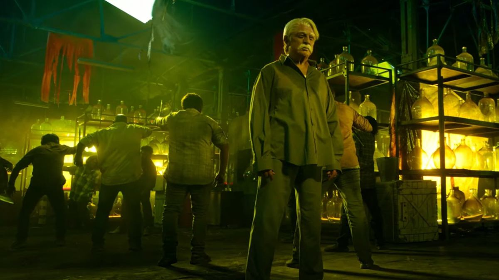

Director: Shankar
Cast: Kamal Hassan, Siddarth,Rakul Preet Singh, Priya Bhavani Shankar,Bobby Sinha, Nedumudi Venu,Vivek,Samuthirakani,SJ Surya
Music: Aniruth Ravichandar
Language:Tamil
Runtime: 180 mintues
Storyline: Witnessing corruption and scams once again rearing their ugly heads, Senapathy returns to his homeland to finish what he started
Ratings: 3/10
Senapathy (Kamal Haasan), who reaches Hong Kong at the end of Indian, is now in Taiwan, the land where his idol Subhas Chandra Bose died. While those who waited for Bose’s return never got to see that, a bunch of YouTubers, disillusioned by corruption, trend #ComeBackIndian on social media causing the veteran to return to his homeland. While everyone expects him to serve justice with his belt buckle knife, he first asks the country’s youngsters to call out the corrupt folks in their own households because... cleaning starts at home.
In this sequel, director Shankar explores the fallout that could happen if the character urges everyone in the country to clean up their homes in his footsteps. It's a premise filled with dramatic potential, especially given the changes that have seen in the intervening years. When the first Indian came out, it was just a year ahead of the 50th year of the Indian independence and the country had just begun to move towards a liberalist economic policy, and putting nation first was still considered a virtue. But now, nationalism has come to mean something totally different, and social media has made it possible to paint villains as heroes and vice versa. So, it's interesting to explore if Senapathi would still be a revered figure, and if he might be called Anti-Indian.
The story begins with a team of YouTubers led by Siddharth's Chitra Aravindan coming across several instances of corruption and beginning a social media campaign in the hope that it brings Indian thatha back. And it works, with Senapathi, who's now living as a martial arts guru in Taiwan, returns to the country to continue his battle against corruption.
The problem with Indian 2 is that it is filled with writing that lacks nuance and characters who are caricatures. Even in terms of scenes, all the visual excesses that Shankar throws at them - grand sets, visual effects, and frames filled with people - hardly touch us as there's no emotional connect. In the original, everything was tied to Senapathi's personal struggles. Here, his crusade feels empty, and more importantly, the character's dignity goes for a toss.

Even the action set pieces, while having distinct elements - a zero-gravity setting, a chase in which Senapathi is on a unicycle - hardly provide an adrenaline rush as they go on and on (perhaps due to the decision to release the film in two parts). It is left to Anirudh, who vainly tries to inject some energy into these portions.Kamal Haasan, too, does his bit of heavy lifting, including going shirtless for a stunt scene, in a role that has scope only for prosthetic makeup and not performance.
It is only when the film explores the personal stakes that we care about it and realise what it could have been. We wish there had been more of scenes like the one in which Chitra Aravindan has to expose his father and suffers a loss due to his action. Perhaps, it would have been effective if the narrative had been a contained one, focusing strictly on this conflict, instead of being expansive in an effort to go pan-Indian.
Rating: 0